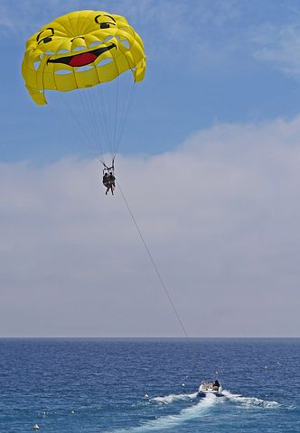

Regional New South Wales
A Dynamic, Productive and Connected Community
New South Wales (NSW) has a population of 7.9 million people (including Sydney), and it’s predicted that it will increase to over 9.0 million by 2027/2028.
It also has the largest and most diverse regional economy of all Australian states.
The cost of both doing business and living in regional NSW is lower than in major cities and the lifestyle is generally more relaxed.
When you base your business in regional NSW, you’ll still be able to take advantage of efficient connections to Sydney, as well as Australian and international markets through multiple world-class rail, road and air corridors. This makes it a cost-effective alternative to Sydney and other major cities.
Regional NSW’s key economic and export sectors include agribusiness and food, high-value manufacturing, resources and clean energy, health and aged care, medical technology, tourism and transport.
An overview of the six out of nine regions of NSW
NSW Government
- The Premier
- Media Releases
- NSW Ministers
- Have Your Say
NSW Departments
- Education
- Health
- Planning and Development
- Regional NSW
Popular
- News
- Life Events
- NSW School and Public Holidays
- Find a Job in NSW Government